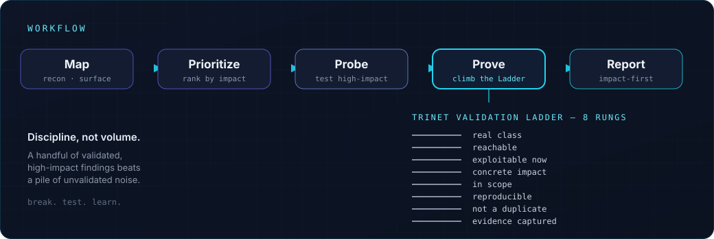
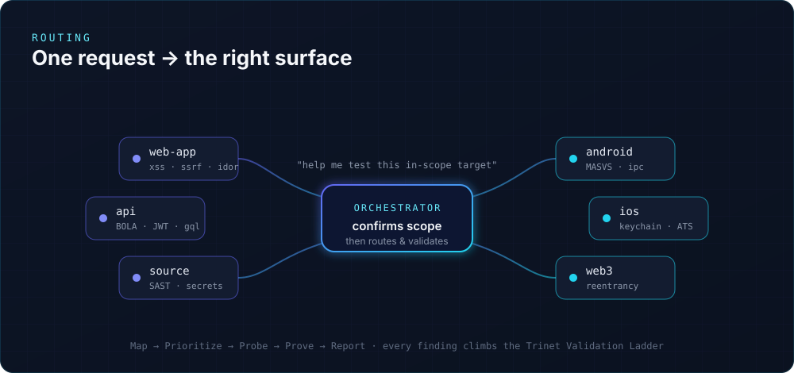

Twelve model-invoked Claude Code skills — web, API, source, Android, iOS, EVM · Solana · Move contracts, cloud, and LLM red-team — plus a guarded autopilot, persistent hunt-memory, and recon automation. Every engagement stays authorized, in-scope, and reportable.

The twelve skills
Describe the target; the matching skill loads its recon steps, checklists, payloads, and reporting format on demand — and kills false positives before they reach a report.
Starting out, or not sure which skill fits.
A website, SPA, dashboard, or login flow.
REST / GraphQL / gRPC.
A repo, PR, or diff.
An Android app / APK.
An iOS app / IPA.
EVM Solidity / DeFi.
Solana / Anchor (Rust).
Move — Sui / Aptos.
AWS / GCP / Azure · K8s / containers.
An AI / LLM feature (chatbot, RAG, agent).
An authorized credential picture.
How it works
Skills are model-invoked: Claude reads each short description and pulls in the full playbook only when your task matches. Every lead has to climb the eight-rung Trinet Validation Ladder before it counts as a finding.

Automation, not just advice
Bundled, scope-gated scripts execute from the Map phase, each skipping any tool you don't have and timing out rather than hanging.
/recon/validate/report/chain/remember/pickup/autopilot/cloud-recon/llm-redteam/takeover/jwt-scan

/autopilot <target> drives scope → recon → hunt → validate → report, but it's human-on-the-loop: it stops at mandatory checkpoints before any active testing, before state-changing exploitation, and before submitting — and hard-refuses out-of-scope hosts, DoS, credential spraying, and destructive actions.
Install
The plugin brings the skills, slash commands, subagents, and scripts — and wires up the runtime they need. Prereqs: Claude Code + git.
Skills load at startup — start a fresh session.
Say “help me test this in-scope web app for IDOR” — Claude should load web-app-pentest and ask for scope. Type / to see the commands.
mcp/mcp.json.example. The HackerOne server is read-only; submissions stay behind a human confirmation.